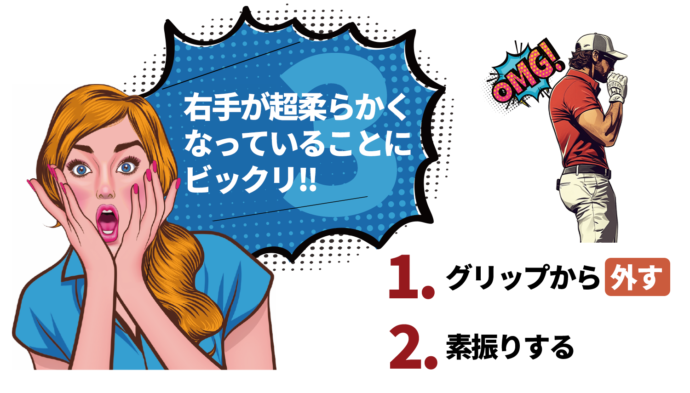
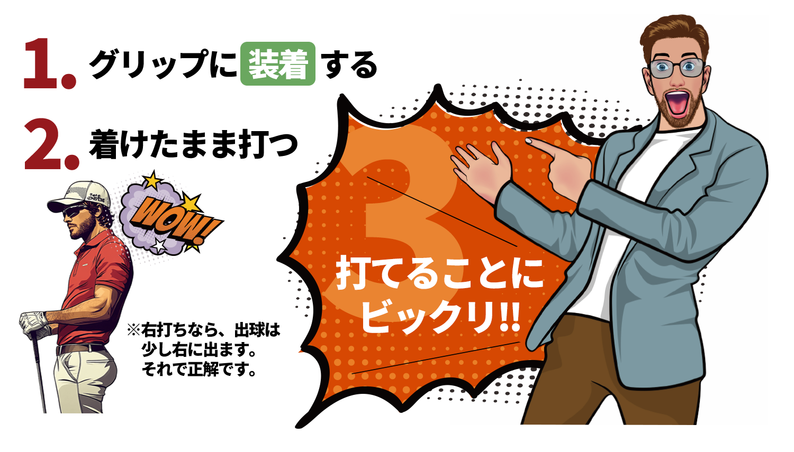
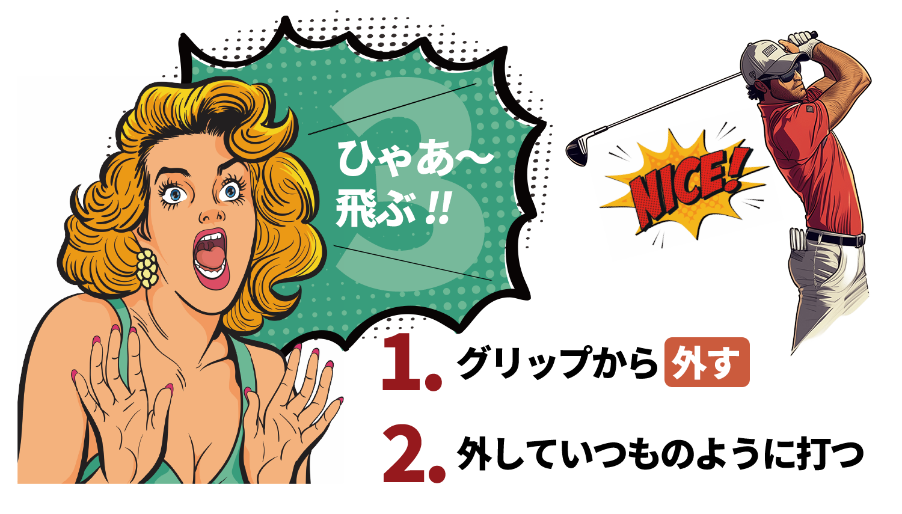

殺して生かして、生かして殺す。
驚くべき効果とおススメ使用方法
このグリップはあなたのスイングを革新します。適切なポジションを保持し、ミスショットを減らす設計です。
＜普通の方法＞着けて素振りする

＜違いを知る＞外して素振りする
＜次のステップ＞着けたまま打ってみる
＜ここから本領発揮＞外して打ってみる
延べ2万人を指導したレッスンプロが考案し、特許も取得した新発想のトレーニング用具！
４つの使い方を繰り返すだけでスライス、チーピンが劇的に改善します！
------ 達人の極意 ------
練習3「着けて打つ」。練習4「外して打つ」。これを交互に、そして何度も繰り返すがよかろう！